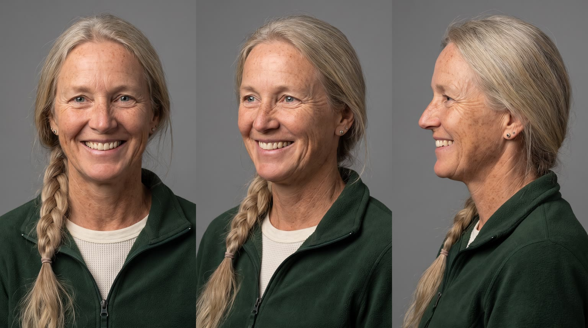
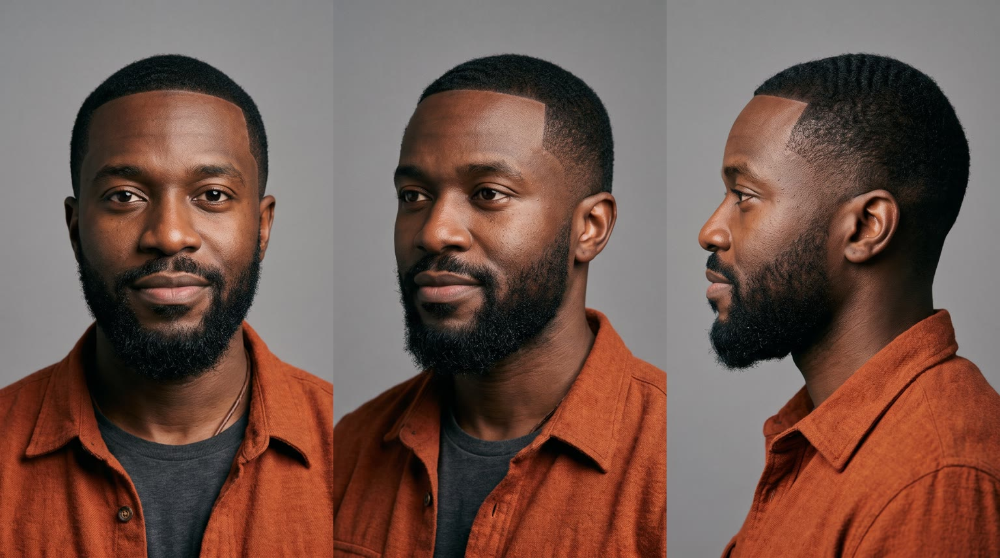
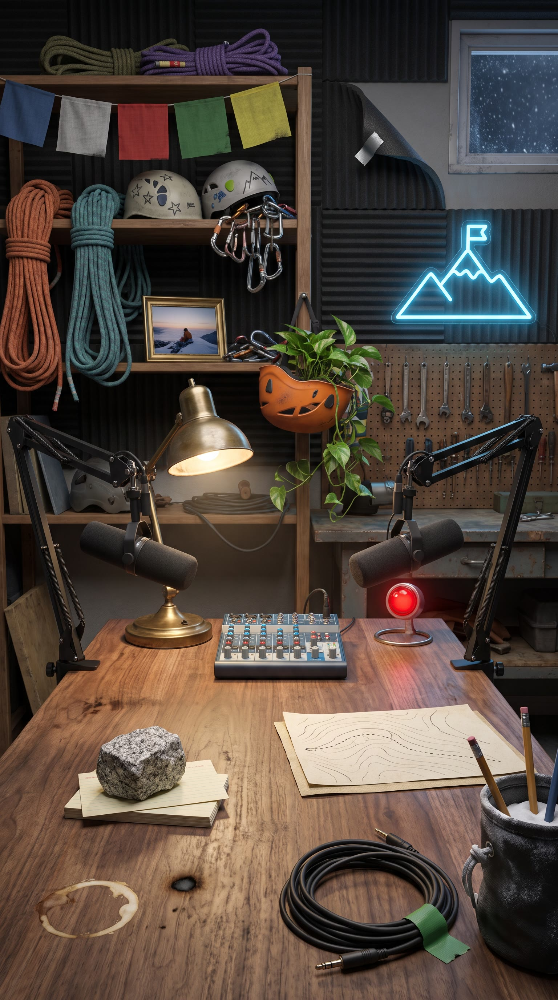
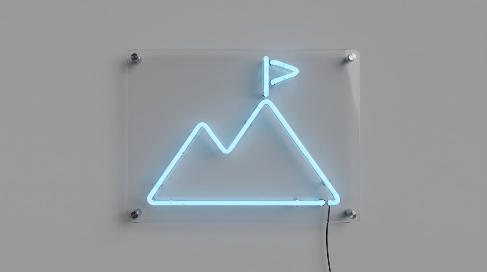
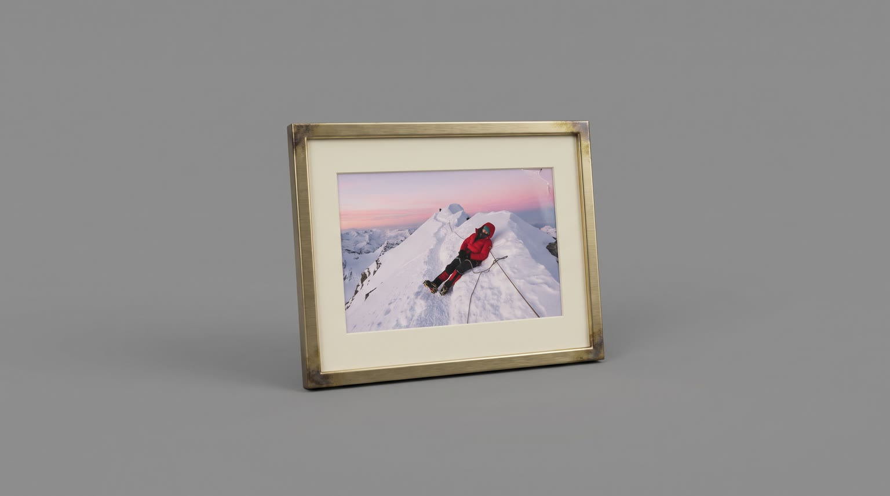
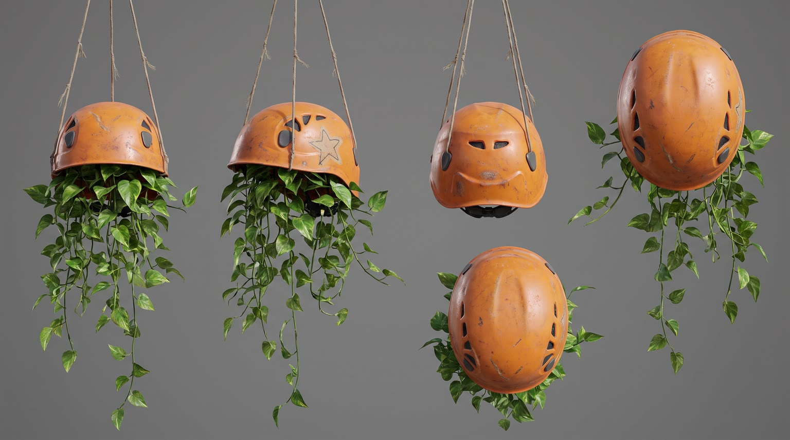

All templates · template.json · original storyboard
Podcast clippodcast-01-send-it-podSend It Pod
Two climbing podcast hosts argue about the worst summit attempt of their lives (she fell asleep on the ridge, standing up). When she asks what's in his pack now, the answer on the desk is {{product.name}}, and it isn't for the mountain.
Fit by product type
| ingested | great | opening it right into the mic is a podcast in-joke and the long-session payoff is natural |
| applied | great | lip balm, hand cream or face mist from the desk drawer, applied on air, fits a three-hour talker |
| worn | good | glasses, headphones, hats, fleeces, watches and socks pulled from a stuff sack and put on at the desk; footwear is shown, not worn, on camera |
| handheld | good | bottles, headlamps, earbuds, chargers and tools set down by the mic |
| carried | great | her line literally asks what's in his pack: he lifts it onto the desk |
| home | good | lamps, chairs, speakers, blankets and plants as part of the studio set; large sofas or beds are a stretch in a one-car garage |
| consumable | good | snacks, refills and sachets torn open on the desk |
Refuses: products for children; alcohol; climbing safety equipment (ropes, harnesses, helmets): the punchline says it isn't for the mountain; anything unsafe to use while talking into a mic (sedatives)
Cast, world and props (shipped with the template)






- Send It Pod records every Tuesday night in Kofi's converted one-car garage in Boulder. Tonight is episode 148; his late dad's workbench is still under the shelves and the old oil stain is still under the rug.
- Brynn and Kofi were rope partners for nine seasons before she went full-time as an alpine guide (about 60 days a year on the ice) and he started drawing trail maps for a living.
- The story everyone asks for: Kessik Peak, 2016, 4:10am on the summit ridge, Brynn fell asleep standing up, clipped to an anchor, for eleven minutes. Kofi took a photo. It hangs in a thin brass frame on the back shelf.
- The chunk of grey granite on the desk came off Kessik's summit block that morning. They use it as a paperweight for the listener questions.
- Every rope on the shelf has a story and a strip of coloured tape on its end: orange for retired, green for still in service.
Script: what each line must do
Right column is the worked example for Red Bull Sugarfree.
| Time | Speaker | Intent (template) | Example |
|---|---|---|---|
| 0.3-2.5 | brynn | Fixed: I fell asleep on a summit ridge. Standing up. Max 10 words. Delivery: half proud, half ashamed, hands up, leaning into the mic | I fell asleep on a summit ridge. Standing up. |
| 2.8-3.8 | kofi | Fixed: Roped to me! Max 4 words. Delivery: deadpan outrage, pointing across the desk | Roped to me! |
| 4.8-6.6 | brynn | Fixed: It was hour fourteen, Kofi! Max 6 words. Delivery: laughing, slapping the desk | It was hour fourteen, Kofi! |
| 7.4-8.8 | kofi | Callback: name the ordinary, unbranded thing she relied on up the mountain instead, the kind of thing that fails at exactly what the product's benefit does. a generic category noun, never a brand or a real product; no claim about it, just the fact she packed it. Pattern: 'You packed <number> <generic things>.' e.g. 'You packed cotton socks.', 'You packed zero sunscreen.', 'You packed a paper map.' Max 6 words. Delivery: dry, slow, counting on his fingers | You packed four candy bars. |
| 9.4-10.9 | brynn | Fixed: So what's in your pack, genius? Max 7 words. Delivery: arms folded, eyebrows up, a grin | So what's in your pack, genius? |
| 13.4-16.0 | kofi | Product line: say {{product.name}} (or its short spoken form) and the ONE benefit from product.benefits that beats what she packed. benefit comes only from product.benefits, reworded no further than person and tense; brand spelled phonetically in the video prompt using product.phonetic Max 9 words. Delivery: calm, pleased with himself, right after the product moment | Red Bull Sugarfree. Keeps me alert, no sugar. |
| 16.6-18.0 | brynn | Fixed: You bring that up a mountain? Max 7 words. Delivery: teasing, pointing at the product | You bring that up a mountain? |
| 18.2-20.8 | kofi | Punchline: the real use moment is right here in the studio, at the co-host's expense. Pattern: 'No. I <verb> it here. You talk for three hours.' The verb fits the archetype (bring, wear, use, keep, need); the last sentence 'You talk for three hours.' never changes. Max 10 words. Delivery: bone dry, a tiny pause before 'here', not looking at her | No. I bring it here. You talk for three hours. |
| 21.6-22.4 | brynn | Fixed: That's fair. Max 3 words. Delivery: wheezing with laughter, forehead nearly on the desk | That's fair. |
| 26.4-29.4 | brynn | Tagline as a knowing host-read, then out: product.tagline if the page has one, otherwise a 3 to 5 word line built from the L6 benefit, then 'There, I read the ad.' always ends with 'There, I read the ad.' Max 10 words. Delivery: sits up, fake-announcer voice for the tagline, then normal and deadpan for the rest | Wiiings without sugar. There, I read the ad. |
Product-adjacent props by type
| ingested | the product on the walnut desk right in front of Kofi's mic base, on one of the listener index cards as a coaster |
| applied | the shallow top drawer of the walnut desk on Kofi's side, where the product lives next to spare pencils |
| worn | a canvas stuff sack under Kofi's side of the desk, where the product has been stashed for the show |
| handheld | the desk beside Kofi's mixer knobs, where the product rests next to the rubber-banded notebook |
| carried | the product on the floor beside Kofi's chair, lifted onto the desk for the reveal |
| home | the corner of the studio beside Kofi's chair, where the product is part of the set |
| consumable | the product's pack in Kofi's shallow desk drawer |
Shots and how the product appears for each type
S01 · 0 to 2.7 s · absent
Brynn at her mic, hands up, confesses mid-story, looking past camera at Kofi.
S02 · 2.7 to 4.4 s · absent
Kofi points across the desk in deadpan outrage.
S03 · 4.4 to 7.0 s · absent
Brynn slaps the desk laughing, defending herself.
S04 · 7.0 to 9.2 s · absent
The full set: Kofi counts on his fingers, Brynn covers her face.
S05 · 9.2 to 11.2 s · absent
Brynn folds her arms, eyebrows up: the challenge.
S06 · 11.2 to 13.2 s · hero
Kofi's hand brings the product into the pool of lamp light by his mic; its moment (opening, switching on, unzipping) happens right on the mic.
| ingested | a man's dark-skinned hand with a thin leather cord bracelet setting {{product.visual}} upright right in front of the base of a large matte black broadcast microphone and opening it, label to camera, cold droplets on it |
| applied | a man's dark-skinned hand with a thin leather cord bracelet setting {{product.visual}} upright in front of the base of a large matte black broadcast microphone and flicking its cap open, label to camera |
| worn | a man's dark-skinned hand with a thin leather cord bracelet laying {{product.visual}} on the walnut desk in front of the base of a large matte black broadcast microphone, pulled from a canvas stuff sack, its best side and logo to camera |
| handheld | a man's dark-skinned hand with a thin leather cord bracelet setting {{product.visual}} down in front of the base of a large matte black broadcast microphone and switching it on or clicking it once, logo to camera |
| carried | a man's dark-skinned hand with a thin leather cord bracelet thumping {{product.visual}} onto the walnut desk beside the base of a large matte black broadcast microphone and unzipping or unclasping it, logo to camera |
| home | a man's dark-skinned hand with a thin leather cord bracelet switching on or patting {{product.visual}} beside the desk, the insert cam low at its level, the product at its true size and lit as the brightest thing in frame |
| consumable | a man's dark-skinned hand with a thin leather cord bracelet tearing open the pack of {{product.visual}} in front of the base of a large matte black broadcast microphone, label to camera |
S07 · 13.2 to 16.2 s · in_use
Kofi shows the product beside his mic and names it, pleased with himself.
| ingested | holding {{product.visual}} open at chest height beside the mic, label facing camera |
| applied | having just applied {{product.visual}} on air, holding it at chest height beside the mic, label facing camera |
| worn | wearing {{product.visual}}, just put on, adjusting it once beside the mic (if it is footwear, holding it up at chest height instead) |
| handheld | holding {{product.visual}} at chest height beside the mic, logo facing camera |
| carried | holding {{product.visual}} open on the desk in front of him, one hand on it, logo facing camera |
| home | leaning back in or beside {{product.visual}} next to his desk chair, one hand resting on it, its best side to camera |
| consumable | holding one {{product.visual}} from the open pack at chest height beside the mic, label facing camera |
S08 · 16.2 to 21.0 s · background
Brynn points at the product teasingly; Kofi delivers the punchline without looking at her. Her face drops, then cracks.
| ingested | {{product.visual}} stands upright on the desk in front of Kofi with its label facing camera |
| applied | {{product.visual}} stands upright on the desk in front of Kofi with its label facing camera |
| worn | Kofi is wearing {{product.visual}} (or it lies on the desk in front of him if it is footwear), its best side to camera |
| handheld | {{product.visual}} rests on the desk in front of Kofi with its logo facing camera |
| carried | {{product.visual}} sits open on the desk in front of Kofi with its logo facing camera |
| home | {{product.visual}} is visible at its true size beside Kofi's chair, part of the studio set |
| consumable | the open pack of {{product.visual}} lies on the desk in front of Kofi with its label facing camera |
S09 · 21.0 to 24.8 s · absent
Brynn collapses laughing, forehead toward the desk, one hand up conceding.
S10 · 24.8 to 30 s · hero
Wide of the set with the product between the two hosts. Brynn sits up and does a deadpan host-read to camera; Kofi raises the product in a small toast.
| ingested | {{product.visual}} stands upright on the walnut desk exactly between the two mics, label facing camera |
| applied | {{product.visual}} stands upright on the walnut desk exactly between the two mics, label facing camera |
| worn | Kofi wears {{product.visual}} (or it sits on the desk between the mics if it is footwear), its best side and logo to camera |
| handheld | {{product.visual}} rests on the walnut desk exactly between the two mics, logo facing camera |
| carried | {{product.visual}} sits on the walnut desk exactly between the two mics, logo facing camera |
| home | {{product.visual}} stands in the studio between and just behind the two hosts' chairs, at its true size and fully in frame, logo to camera |
| consumable | the pack of {{product.visual}} stands upright on the walnut desk exactly between the two mics, label facing camera |
Generation units (templated prompts)
U1 · 12 s
9:16 video podcast clip in a small cosy studio: walnut desk, two large matte black broadcast mics on boom arms with no logos, headphones, rope shelves, a sky-blue neon mountain outline with no letters, soft key light, warm lamp. Three locked cameras, cutting on each speaker. Shot 1 (0 to 2.7 s): off-axis single of @Image1 (Brynn), hands up, half proud: "{{line.L1}}" Shot 2 (2.7 to 4.4 s): off-axis single of @Image2 (Kofi), pointing across the desk, deadpan outrage: "{{line.L2}}" Shot 3 (4.4 to 7 s): Brynn slaps the desk laughing: "{{line.L3}}" Shot 4 (7 to 9.2 s): wide two-shot, Kofi counts on his fingers, dry and slow: "{{line.L4}}" Brynn covers her face. Shot 5 (9.2 to 12 s): Brynn folds her arms, eyebrows up: "{{line.L5}}" Each host looks past the lens at the other. No product visible yet. Native sound: close warm broadcast-mic voices, room tone, chair creaks, a desk slap, overlapping laughter. No music. No text on screen, no logos.U2 · 5 s · exact-risk
9:16 video podcast. Shot 1 (0 to 2 s): locked macro insert, {{action.S06}}; the product matches @Image1 exactly, undistorted, and its own sound is loud and close in the mic. Shot 2 (2 to 5 s): off-axis single of @Image2 (Kofi), headphones on, {{action.S07}}, calm and pleased, looking past camera at his co-host: "{{line.L6}}" (say the brand as {{product.phonetic}}). Keep the product's shape, colours and label exactly as @Image1. Exactly one product. Native sound: the product's own sound, close voice, room tone. No music.U3 · 9 s
9:16 video podcast, same studio and light. Shot 1 (0 to 4.8 s): medium two-shot across the desk, {{action.S08}} (the product exactly as @Image3). @Image1 (Brynn) points at it, teasing: "{{line.L7}}" @Image2 (Kofi), bone dry, looking at his mic, not at her, a tiny pause: "{{line.L8}}" Her face drops, then cracks. Shot 2 (4.8 to 8.6 s): off-axis single of Brynn doubled over laughing, forehead toward the desk, one hand up: "{{line.L9}}" Kofi's low chuckle off mic. The product does not move. Native sound: voices, overlapping genuine laughter, room tone. No music. No logos, no readable text.U4 · 6 s · exact-risk
9:16 video podcast, locked wide two-shot of the studio: {{action.S10}}; the product matches @Image1 exactly and stays unchanged. @Image2 (Brynn) sits up and looks straight into the lens with a fake-announcer voice, then normal and deadpan: "{{line.L10}}" (say the brand, if spoken, as {{product.phonetic}}). @Image3 (Kofi) grins and raises or taps the product in a small toast, label still to camera (if it is room-scale he just pats it). Native sound: voices, a laugh, room tone. No music, no text.